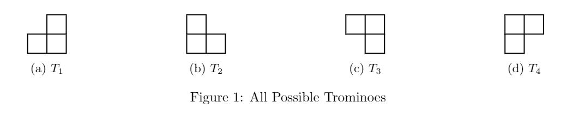

Tromino Tiling
Oops ... your browser doesn't support the HTML5 canvas element
Determine the size of Grid
Very Easy (2x2)
Easy(4x4)
Normal(8x8)
Hard(16x16)
Reset
Controls

Click to place tromino.
Press
1
for Tromino 1
Press
2
for Tromino 2
Press
3
for Tromino 3
Press
4
for Tromino 4
Press
u
to undo last move
Press
r
to cycle between trominos